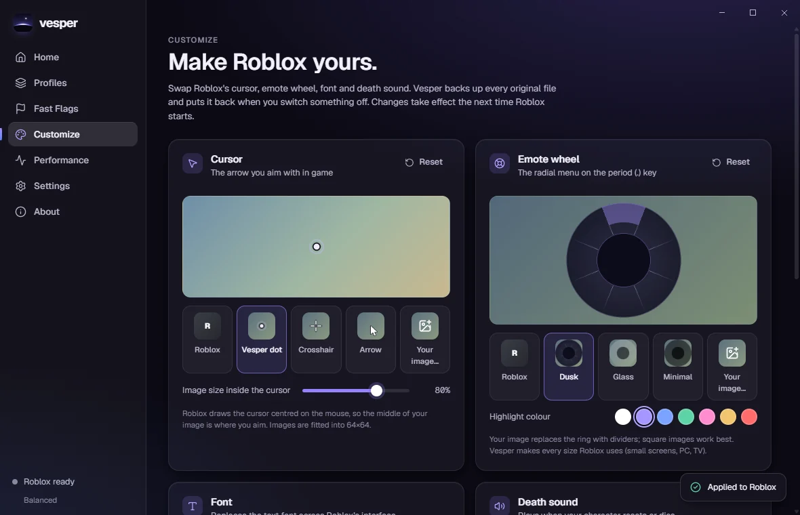

Launch, or jump straight in
Open Roblox or paste a game, private server or roblox:// link. Vesper follows Roblox through
its own updates and explains clearly if it closes or never opens.
Roblox launcher for Windows
Vesper applies the Fast Flags Roblox still accepts, sets Roblox's own frame-rate limit, lets you restyle the cursor and emote wheel, and then reads Roblox's log to prove what actually took effect.

Why Vesper
Since 29 September 2025, Roblox only reads local Fast Flags that are on its published allowlist. Everything else is silently ignored, including the old FPS unlocker.
Vesper only offers flags on that list. After you launch, it reads the two lines Roblox writes for every local setting: what it loaded, and what it denied. You see the result per flag, per Roblox version.
The frame-rate limit uses Roblox's own setting instead of a flag, so it still works.
13:41:18.584 LoadClientSettingsFromLocal: "{
"FFlagHandleAltEnterFullscreenManually": "False"
}"
13:41:18.585 Successfully loaded flags
…another launcher's file:
16:02:22.645 Denied local configuration for: FFlagDebugDisablePostFx
16:02:22.645 Denied local configuration for: FIntRenderShadowIntensityFeatures
Open Roblox or paste a game, private server or roblox:// link. Vesper follows Roblox through
its own updates and explains clearly if it closes or never opens.
Plain-language descriptions, risk, how sure we are of each effect, sources, and Roblox's published values. Conflicts are caught and fixed in one click.
After each launch: accepted, denied or not read, with the Roblox version it was checked on. No other launcher shows you this.
Competitive, Balanced, Quality, Potato and Custom, plus your own. Duplicate, export, import old flag files and set a default.
Swap the cursor, emote wheel, font and death sound with built-in styles or your own image. Vesper makes every size Roblox needs and restores the originals.
Live CPU, memory and GPU for Roblox and your PC, plus frame rate and frame timing where Windows allows. A dash, never a guess.
“Using Vesper” on your profile with a button for friends. Built in, off until you turn it on, and it never shares your games or account.
Backups with history, one-click recovery, diagnostics for bug reports, and an uninstaller that reverts Vesper's changes to Roblox.




Fast Flags
From Roblox's allowlist announcement. “Uncertain” means the flag is allowed but Roblox hasn't documented exactly what it does, so Vesper says so instead of guessing.
| Flag | What it does | Area | Effect |
|---|---|---|---|
| Roblox handles Alt+EnterFFlagHandleAltEnterFullscreenManually |
When off, Alt+Enter is handled by Direct3D instead of Roblox, which allows exclusive fullscreen. |
Rendering, UI | Established |
| Ignore Windows display scalingDFFlagDisableDPIScale |
Renders at your display's full resolution instead of reducing quality when Windows scaling is above 100%. |
Rendering, Graphics, UI | Established |
| Anti-aliasing samples (MSAA)FIntDebugForceMSAASamples |
Forces a fixed number of multisample anti-aliasing samples instead of Roblox's automatic choice. |
Rendering, Graphics, Performance, Debug | Established |
| Texture quality overrideDFFlagTextureQualityOverrideEnabled | Lets the texture quality level below take effect. |
Graphics, Performance | Established |
| Texture quality levelDFIntTextureQualityOverride | Forces texture resolution from 0 (lowest) to 3 (highest). |
Graphics, Performance | Established |
| Force graphics quality levelDFIntDebugFRMQualityLevelOverride |
Locks Roblox's internal graphics quality level (1–21), overriding the in-game slider. |
Rendering, Graphics, Performance, Debug | Established |
| Prefer VulkanFFlagDebugGraphicsPreferVulkan | Asks Roblox to render with Vulkan instead of its default graphics API. |
Rendering, Engine, Debug | Established |
| Prefer OpenGLFFlagDebugGraphicsPreferOpenGL | Asks Roblox to render with OpenGL instead of its default graphics API. |
Rendering, Engine, Debug | Established |
| Prefer Direct3D 11FFlagDebugGraphicsPreferD3D11 | Asks Roblox to render with Direct3D 11. |
Rendering, Engine, Debug | Being removed |
| Gray skyFFlagDebugSkyGray | Replaces the skybox with a flat gray sky. |
Graphics, Debug | Established |
| Grass distance (minimum)FIntFRMMinGrassDistance | Lower bound for how far away terrain grass is drawn. |
Graphics, Performance | Established |
| Grass distance (maximum)FIntFRMMaxGrassDistance | Upper bound for how far away terrain grass is drawn. |
Graphics, Performance | Established |
| Grass motionFIntGrassMovementReducedMotionFactor | Scales how much terrain grass sways. Roblox lists it under user-interface settings. |
UI, Graphics | Uncertain |
| Pause lighting voxelizerDFFlagDebugPauseVoxelizer | Stops Roblox from updating its voxel lighting data. |
Rendering, Performance, Debug | Uncertain |
| Mesh detail distance · level 0DFIntCSGLevelOfDetailSwitchingDistance | Distance at which solid-modelling (CSG) parts first drop from full detail. |
Graphics, Performance | Uncertain |
| Mesh detail distance · level 1→2DFIntCSGLevelOfDetailSwitchingDistanceL12 | Distance at which solid-modelling (CSG) parts drop from detail level 1 to 2. |
Graphics, Performance | Uncertain |
| Mesh detail distance · level 2→3DFIntCSGLevelOfDetailSwitchingDistanceL23 | Distance at which solid-modelling (CSG) parts drop from detail level 2 to 3. |
Graphics, Performance | Uncertain |
| Mesh detail distance · level 3→4DFIntCSGLevelOfDetailSwitchingDistanceL34 | Distance at which solid-modelling (CSG) parts drop from detail level 3 to 4. |
Graphics, Performance | Uncertain |
Catalog reviewed 2026-10-07. Source: Roblox's allowlist announcement.
Profiles
Uncapped frame rate, above-normal priority, no multisampling, no terrain grass, exclusive fullscreen on Alt+Enter.
Frame rate capped to your display's refresh rate; everything else at Roblox's defaults.
Full resolution on scaled displays, 4× multisampling and the highest textures.
Lowest graphics level and textures, no grass, a plain sky, capped at 60 FPS.
Starts with nothing changed. Add exactly what you want.
Profiles change settings. Vesper doesn't claim any of them makes Roblox faster on your PC; the Performance page shows what actually happens.
Download
Vesper 0.1.0 is in private testing. The installer will appear here, with its checksum, when it's published.
Install
Prefer no installer? The portable build keeps everything in a folder next to Vesper.exe.
Privacy and security
Vesper starts the official Roblox client. It doesn't inject anything, doesn't keep handles to Roblox's process, and doesn't touch its anti-cheat.
FAQ
Vesper launches the normal Roblox client and only changes settings files and content files, the same way other launchers have for years. It never injects code, reads memory or touches Roblox's anti-cheat. Roblox doesn't officially endorse any third-party launcher, so we can't promise anything on Roblox's behalf.
Roblox stopped honouring DFIntTaskSchedulerTargetFps in 2025. Vesper sets Roblox's own
frame-rate cap setting instead, which still works. If another launcher has locked Roblox's settings file
as read-only, Vesper tells you and leaves the lock alone.
Yes. Vesper uses Roblox's official install and doesn't take over game links from the website. It sees other launchers' copies of Roblox and never changes their files.
Vesper counts Direct3D frames through Windows event tracing, which only administrators and the “Performance Log Users” group may use. Vesper explains how to allow it but never changes Windows security settings itself.
No. Roblox doesn't support outside shaders, and injecting them gets caught by its anti-cheat. For experiences you build yourself, Vesper includes colour-grading presets as a Roblox Studio script.
Not yet. Vesper is Windows-only for now.
Uninstall from Windows' Installed apps. The uninstaller removes the flags and customisations Vesper applied to Roblox and restores its original frame-rate setting.